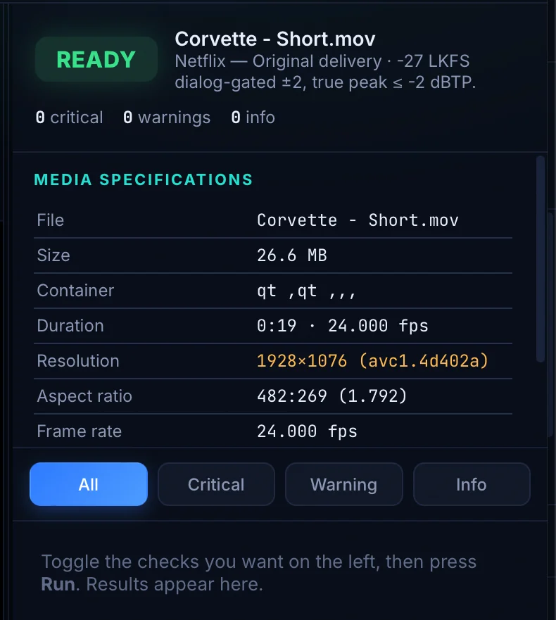
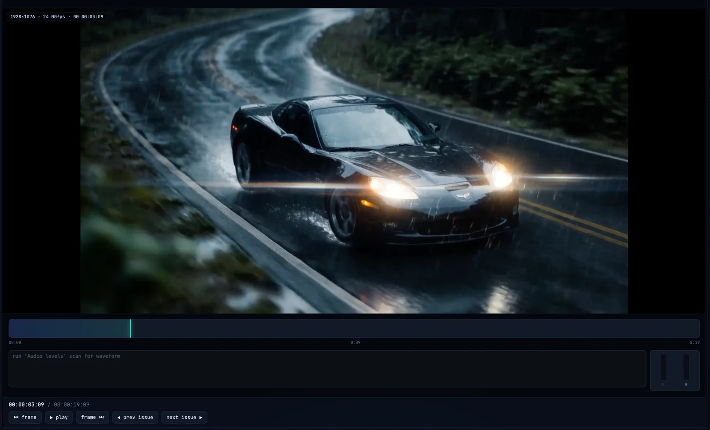
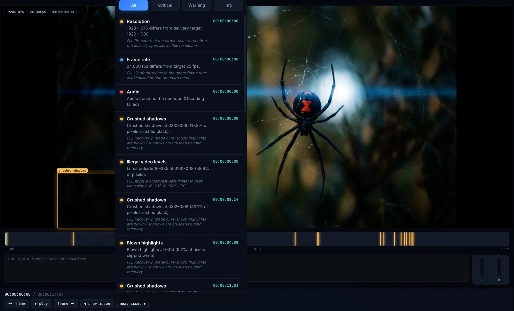
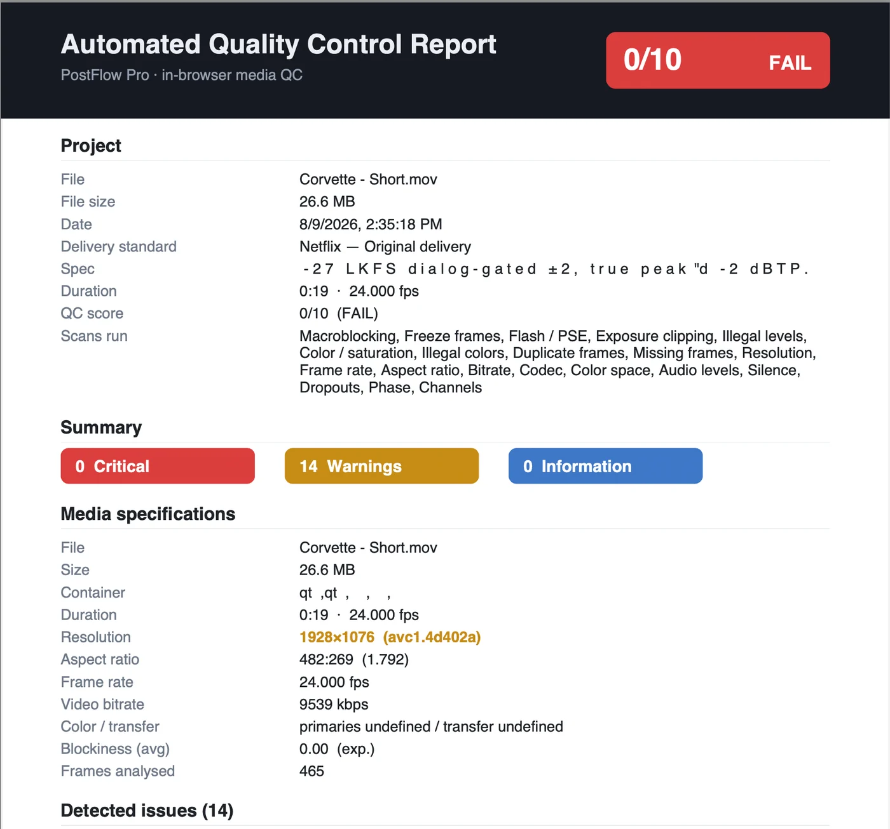

Instantly scan your exported video files for technical video and audio errors before submitting to streaming platforms, broadcasters, or film festivals. No uploads. Unlimited scans. Fast, secure, and private.
A quick walkthrough of running a QC scan on your export — and where to find and read the results once it's done.
Everything you need to ship clean exports — without sending a single frame to the cloud.
Your files never leave your computer, keeping your content secure and confidential.
Scan as many exports as you want with no restrictions, quotas, or per-minute fees.
Receive a detailed report with timestamps, issue descriptions, and severity levels.
Catch problems before they're rejected by distributors, broadcasters, or festivals.
The scanner analyzes your exports frame-by-frame and sample-by-sample for the issues that get deliveries bounced.
Point FrameQuality Pro at a file or a whole folder — it does the rest, entirely on your machine.
Drag in a single file or queue an entire delivery folder. Supports ProRes, DNxHD, H.264/265, IMF, MXF, WAV and more — no transcode, no upload.
Choose a delivery preset — Netflix, IMF, AS-11, EBU R128 — or build your own tolerances. The engine analyzes every frame and audio sample locally.
Jump to any flagged timecode, confirm or dismiss issues, then export a timestamped PDF to hand to your client, editor, or delivery QC team.
Real screenshots from a delivery scan — read the specs, review frame-accurately, walk the flagged issues, then hand off the report.

The moment a file loads, you see the container, duration, resolution, aspect ratio, frame rate and codec — with anything off your delivery target flagged in amber before you run a single scan.

Watch your export in a built-in player with a live timecode readout, scrubbable timeline and channel meters. Step frame-by-frame or jump straight to any flagged moment.

Resolution, frame rate, crushed shadows, blown highlights, illegal levels and more — each with a severity, an exact timecode, and a recommended fix. Colored markers on the timeline take you right to the frame.

Export a timestamped pass/fail report — file details, delivery standard, an overall QC score and every detected issue with severity. Hand it straight to your client, editor or delivery QC team.
Every tool a post team needs to find, verify, and clear technical issues fast.
Click any issue to jump straight to the exact frame with a built-in player and timecode readout — no round-trip to your NLE.
One-click profiles for Netflix, Amazon, IMF, AS-11 DPP, and EBU R128 — or save custom tolerances per client.
Integrated LUFS, true-peak, and dialnorm meters with a scrollable waveform so you can see exactly where audio drifts out of spec.
Waveform, vectorscope and histogram views flag illegal levels and color-gamut violations before they reach broadcast QC.
Generate a branded, timestamped report — or export raw CSV/EDL markers to drop flagged points straight into your timeline.
No credit card to begin. Cancel anytime.
Whether you're submitting to Netflix, Amazon Prime Video, broadcasters, clients, or film festivals, the QC Scanner helps identify technical issues before they become costly rejections.
Start scanning free →